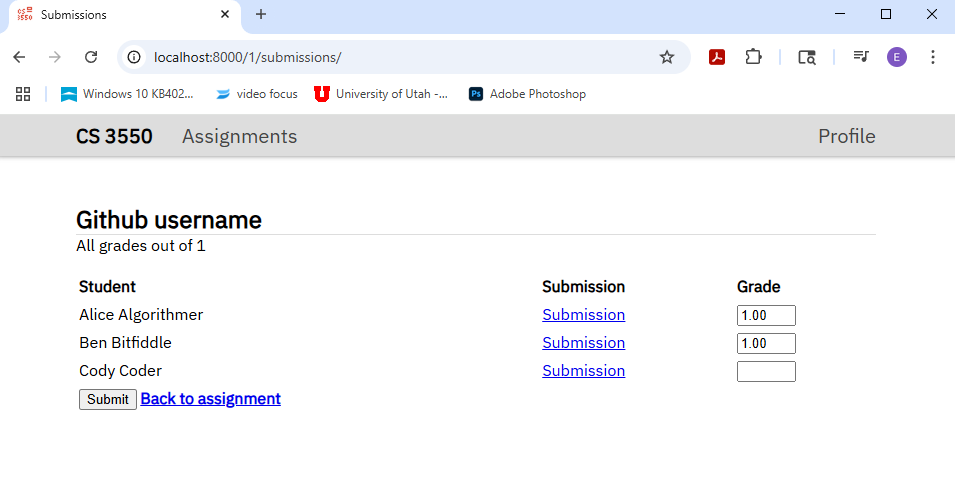
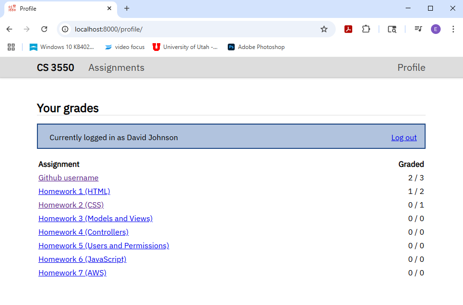
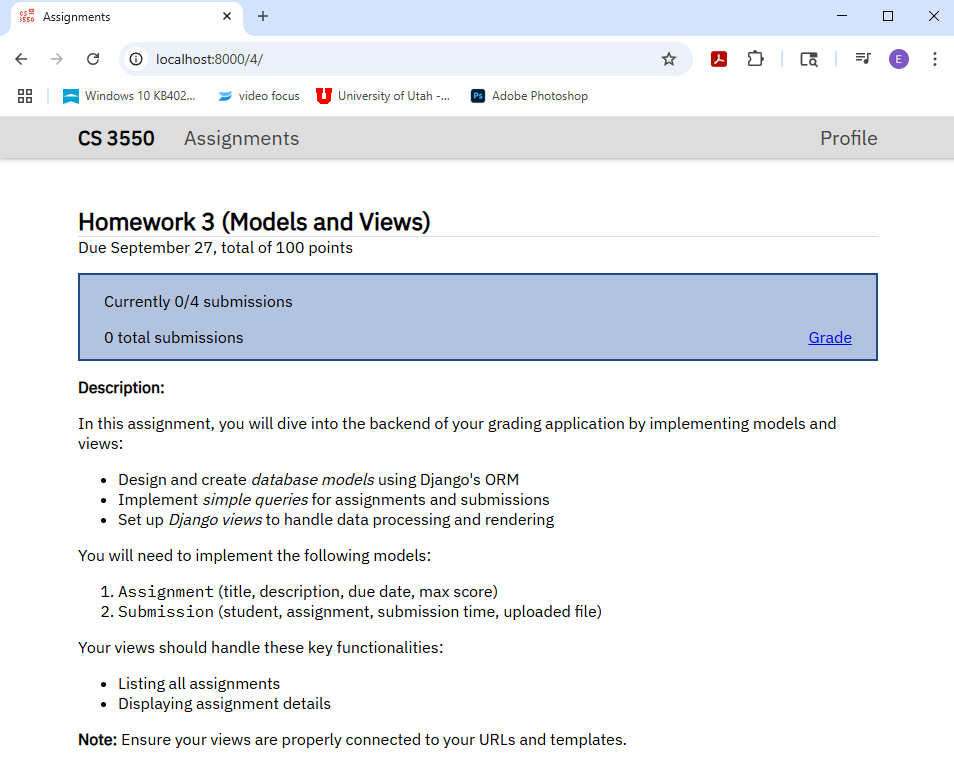
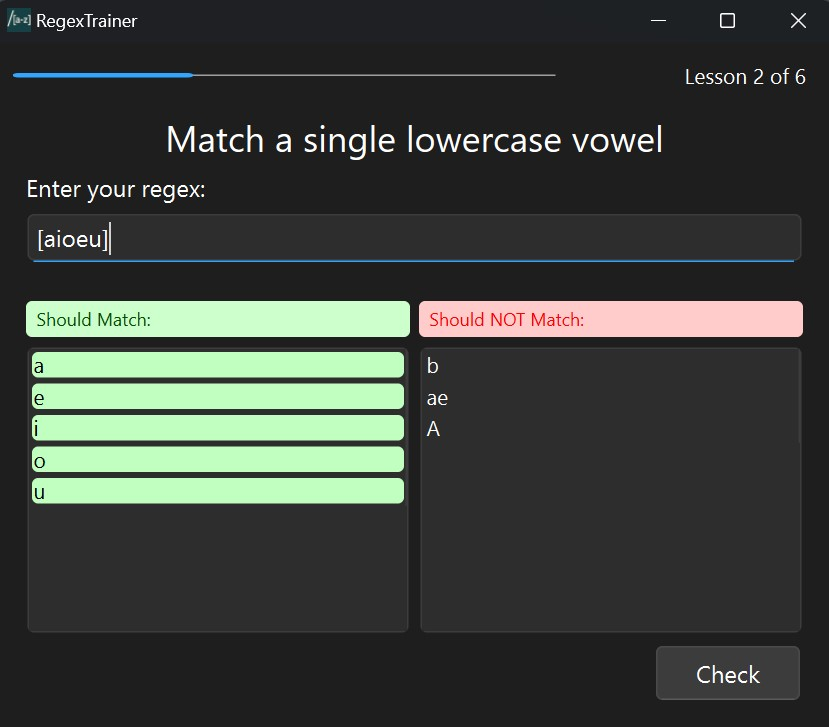
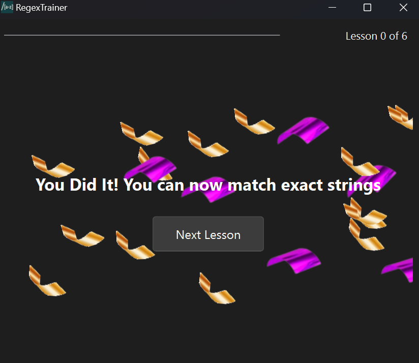
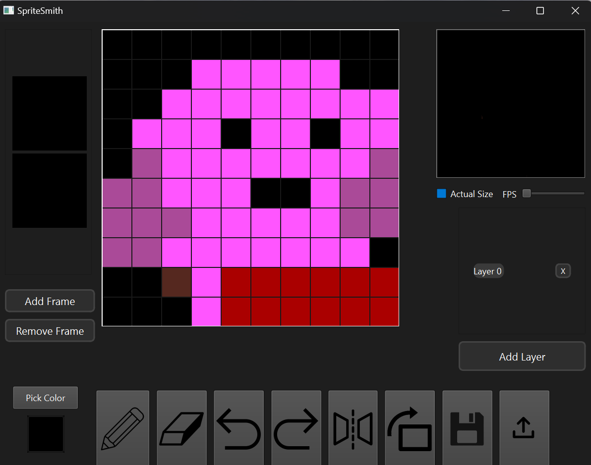
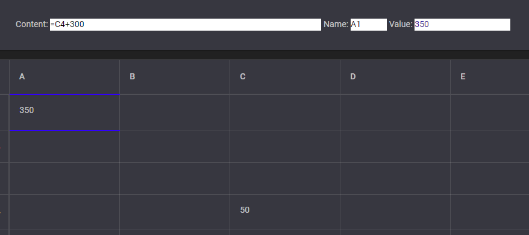
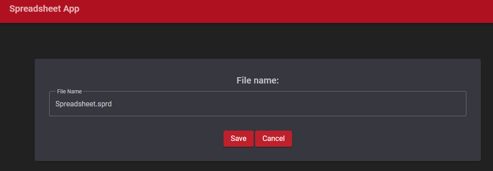
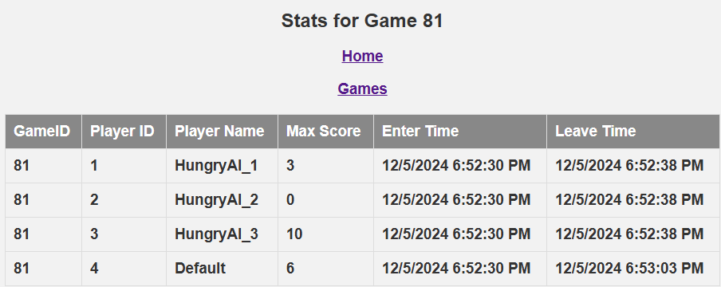

Projects
Graderific
5/1/2025Project overview
Grading and assignment submission web application. There are 3 different types of users a superuser/professor, a TA and a student. Each type of user has a different view on the site. Dynamic webpage made using Django.
- Student view: students can see assignment descriptions, when assignments are due, their grade on assignments and their submissions.
- TA view: TAs can see all assignments that are assigned to them, and can grade said assignments.
- Professor view: Professors can see all assignments, submissions, and how many submitted assignments are graded.
- Used Django and mongoDB to make website dynamic for each user.
- Javascript was used to make the website more interactive. Making tables sortable and making assignment submission asynchronous.
- Used AWS to deploy the server and namecheap to get Graderific.me domain name.
- Used NGINX as proxy server to increase performance.
This project was completed throughout the entirety of web dev 1. Steps in creating the website: 1. HTML 2. CSS 3. Django views 4. HTML Forms (GET/POST requests) 5. Authentication and Authorization (Users and Security) 6. Javascript (website interactivity) 7. Website Deployment. Graderific is not longer running on AWS.
Big Concepts:
- Python
- Django models
- Django views
- Django templates
- mongoDB
- HTML
- CSS
- Django webserver
- HTTP Requests
- Encryption and Security
- Javascript
- Asynchronous form submission
- AWS and NGINX (Web Deployment)



RegexTrainer
5/1/2025Project overview
Interactive tutorial to teach people unfamiliar with regular expressions the basics of regex. Regex trainer has lessons slides which teach about properties of regex. After each lesson there are practice slides, which allows the user to reinforce there knowledge.
- Teaches about the basic properties of regex.
- Interactive test pages.
- The user enters a regex expression and it must match the words on the left, but cannot match the words on the right.
- Often times there are many answers to each practice slide so users can be creative.
- After each lesson is complete there is a celebration scene to congratulate the users progress.
- We take the user input and attempt to create a regex object out of it and then apply it to the list of strings, if it matches all of them the user can move to the next slide.
Me and a team of 4 other developers created this as our final project for Software Practice 2. We created RegexTrainer using Agile principles and Scrum/Kanban software development methods. We had a 15 minute daily standup meeting discussing what are you did yesterday and what you will do today. We used github project board to organize tickets and per Kanban used work in progress limits to lower the number of work in progress limits.
Big Concepts:
- C++
- Qt
- MVC
- Agile principles
- Scrum/Kanban
- Separation of Concerns
- Project boards
- Large team coordination


SpriteSmith
2/1/2025Project overview
A sprite editor which can create small 2D shapes and characters. Characters can be animated by adding multiple frames to the sprite. SpriteSmith was built with C++, Qt, and a waterfall development methodology.
- Select the size of the canvas before launching the program.
- Users can draw by selecting the pencil tool and then drawing on the canvas.
- Select a color by pushing the the pick color button.
- Erase a pixel by selecting the eraser and clicking on the desired cell.
- Create a new frame to animate the sprite by clicking new frame.
- Remove the newest frame by clicking remove frame.
- Undo by clicking the back arrow button.
- Redo by clicking the forward arrow button.
- Save the Sprite to a file using JSON.
- Load a sprite to the editor by selecting a previously saved file.
- Flip the sprite over the y-axis by clicking the mirror button.
- Rotate the sprite 90 degrees clockwise by clicking the rotate button.
Me and a team of 4 other developers created this project in Software Practice 2. We created SpriteSmith using Waterfall software development methodology, MVC principles using slots and signals in Qt, and OOP in C++ with header files.
Big Concepts:
- C++
- Qt
- MVC
- Waterfall
- Versioning with branches and large teams
- Separation of Concerns
- GSP
- OOP

Spreadsheet
10/8/2024Project overview
This project is a spreadsheet application built using C# and Blazor, with a focus on user interaction within a browser. Here are some of the applications functionality:
- Users can select cells by single-clicking or double-clicking, which brings the focus to the main input widget
- Arrow keys allow moving the selection up, down, left, or right in the grid
- Can create formulas by using the "=" sign before text
- Updates all related cells upon a given cell changing
- Reference values of other cells by writing their name within a Formula
- Save the Spreadsheet
- Load a spreadsheet into the application using a JSON string in ".sprd" file
- Clear the spreadsheet
- Adjust the number of rows and columns in the spreadsheet
This project also uses a Blazor component library called MudBlazor, which acts as a simple and convenient way to give the document a cohesive style and ease of use.
Big Concepts:
- Blazor
- Test Driven Development
- Unit Testing
- MVC
- Separation of Concerns
- GSP
- Self Documenting code


Snake Game
11/10/2024Project overview
This project is a Snake Client application built using C# and Blazor. We used Blazor.Extensions.Canvas and Blazor.Extensions.Canvas.Canvas2D to draw the snakes, and the world. Here are some of the applications functionality:
- Multiple Clients can connect through the given server
- Arrow Keys and W,A,S,D allow snake movement
- Touch a powerup and get one score point
- Listens to the server and receives all world information, and updates world model
- Sends movement command information to the server
- Keeps track of all connected clients
- Leaderboard that displays up to the top 3 snakes with the highest score
- Displays FPS. If the client fails to connect shows error message
- Map size responds to whatever maps size the server gives.
- A fade animation is played whenever a snake dies, which adds some life to the game.
- Uses JSON to communicate with the server.
We use JSON to communicate with the server. The Client sends actions to the server. The server sends objects to the client and then we deserialize each one and update the world. This process uses multi-threading and uses multiple threads in order to reduce latency.
Big Concepts:
- Networking
- Drawing
- MVC
- Separation of Concerns
- Multi-Threading

WebServer
12/5/2024Project overview
This is a WebServer that displays the SnakeClient Database information. I wrote this with C#, SQL and HTML. This project connects to the snake Client database and displays Game stat information.
- Updated the Snake Client to Save Game data and snake high score data to Microsoft database.
- Can access saved data through new WebServer app.
- Can accept browser clients and send HTML string through HTTP for the browser to render.
Big Concepts:
- Networking
- User Secrets
- HTTP
- Databases
- Relational Databases
- SQL
- Multi-Threading
- ORM

Protfolio Website
12/29/2024Project overview
Personal website outline projects, skills and classes I have taken. Neatly, puts much of CS concepts I have learned into one place. I introducted myself to much more HTML and CSS with this project.
Big Concepts:
- HTML
- CSS
- Media Query
To look at any github repository referenced in this project page or if you'd like a demo send me an email.